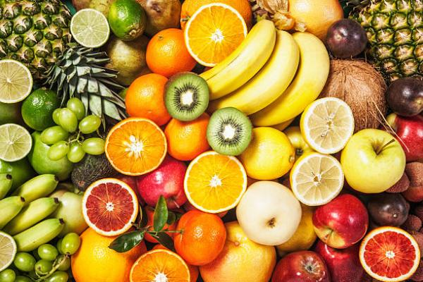

Las frutas se encuentran en el segundo nivel de la olla, son fuente de vitamina Ay C, minerales (potasio, fósforo), agua, fibra alimentaria, e hidratos de carbono simples y complejos.
Los alimentos de este grupo son todas las frutas cultivadas y silvestres, como por ejemplo el mango, pomelo, naranja, mandarina, limón, guayaba, frutilla, melón, aguacate, piña, mamón, sandia, banana, totonja, pera, manzana, uva, níspero, acerola, durazno, higo, chirimoya, caqui, granada, coco, etc.

Grupo 3-Verduras.
Al igual que las frutas, las verduras se encuentran en el segundo nivel de la olla y aportan:
Verduras de hojas verde oscuras:ricas en calcio, hierro, vitamina B, vitamina C y vitamina A. Ejemplos: lechuga, coliflor, locote verde, repollo, acelga, cebollita de hoja, el apio, la col, esparrágo, etc.
Verduras amarillas y rojas:ricas en vitamina A, vitamina C y minerales. Ejemplos: locote rojo y amarillo, tomate, zanahoria, cebolla morada, ají, acelgas rojas, remolacha, maiz, chile húngaro, etc.
Grupo 4-Leche y derivados.
Este grupo de alimentos se encuentra en el tercer nivel de la olla.
Los lácteos y sus derivados son fuente de calcio y proteínas de alto valor biológico (PAVB), además aportan vitamina B1, vitamina B2 y vitamina A.
Los alimentos de este grupo son: leche, yogur, queso.
Grupo 5-Carnes, legumbres secas y huevos.
Los alimentos de origen animal como la carne y el uevo, son la principal fuente de B.
Las legumbres secas aportan hidratos de carbono complejos, fibra alimentaria, vitaminas del complejo B y proteínas de bajo valor biológico (PBVB), comparado con la carne y el huevo.
Este grupo se encuentra en el tercer nivel de la olla como el grupo leche y derivados.
Los alimentos del grupo son:
Legumbres secas:porotos como el San Francisco, colorado, poroto palito, soja, habilla, garbanzo, arveja, lenteja, maní, etc.
Huevos:de gallina, de pato o de codorniz.
Grupo 6-Azúcar.
Este grupo de alimentos aporta hidratos de carbono simplesy casi nada de otros nutrientes, por lo que su consumo debe ser en pequeña cantidad. Por ello se encuentra en la parte superior de la olla.
Los alimentos de este grupo son: Azúcar blanca, azúcar morena, miel de caña, miel de abeja, mermeladas, jaleas, dulces, productos de confitería y golosinas, etc.
Grupo 7-Aceites y grasas.
Este grupo de alimentos aporta energía y se clasifica en dos grupos:
Aceites: son de origen vegetal, aportan ácidos grasos saturados e insaturados y a temperatura ambiente se encuentran en estado líquido. Por procesos tecnológicos adecuados los aceites pueden convertirse al estado sólido, por ejemplo la grasa vegetal hidrogenada, margarina, etc. Ejemplos: Aceites de girasol, de coco, de maní, de argán, etc.
Grasas:son de origen animal, aportan ácidos grasos saturados y colesterol. Atemperatura ambiente se encuentran en estado sólido. Al igual que los azúcares o mieles, los aceites y grasas deben ser consumidas en pequeñas cantidades y se encuentra en la parte superior de la olla. Ejemplos: grasa de cerdo, de vaca, de gallina o pollo, manteca, etc.